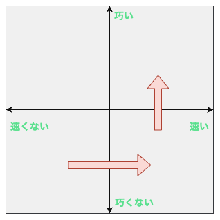
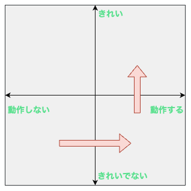

2024年で印象的な学び：SHIROBAKOのあのセリフ
2024年で印象的な学び：SHIROBAKOのあのセリフ
- Event:
アニメから得た学びを発表会
- Presented:
2024/12/27 nikkie
SHIROBAKOのあのセリフ
速く描くには巧くなる巧く描くにはいっぱい描くいっぱい描くには速く描く
7話 杉江さん
お前、誰よ（自己紹介）
nikkie（にっきー）
Pythonとアニメが好き
今期『アオのハコ』めっっっっちゃよい（雛様 あああ。千夏先輩 うあああ）
きっかけ🏃♂️： 厳しい1on1 系アニメかな
毎日１on１してほしい。僕の上司になってください。 pic.twitter.com/Iy5nRcdSBf
— うーたん (@uutan1108) 2024年10月2日
SHIROBAKO （今日は青じゃなくて白！）
アニメ業界 お仕事モノ（P.A.WORKS お仕事シリーズ 第2作 2014年）
シロバコとは（↔️販売用パッケージ）
制作者が最初に手にする事が出来る成果物（ストーリー より）
アニメ業界の 群像劇
キャラクターいっぱい http://shirobako-anime.com/character.html
中心は 5人の夢追う女の子
夢：高校時代にアニメーション同好会で作ったアニメ（神仏混淆 七福神）を、アニメ業界で5人で作る
ITエンジニア、SHIROBAKO大好き説🤗
SHIROBAKO Advent Calendar （2022 に一覧）
IMO：SHIROBAKO × エンジニア = こにふぁーさん
過去のエンジニアニメでも
10月 エンジニアニメ in 関西 🏃♂️
ほか、5月の東京開催 でも
夢追う5人 (1/2)
- 制作進行:
宮森あおい（おいちゃん、みゃ〜もり）
- 原画:
安原絵麻 （「絵麻たそ〜」）
- 声優:
坂木しずか（ずかちゃん）
夢追う5人 (2/2)
- CG:
藤堂美沙（みーちゃん）
- 脚本家:
今井みどり（りーちゃん）
- 原画（もう1回！）:
安原絵麻 （👈本LTの主役）
ここで重要な情報です🏃♂️
10/1に京都、10/2に東京で開催します！
— うーたん (@uutan1108) September 24, 2024
アニメSHIROBAKOだと今井みどりが好きです。
アニメから得た学びを発表会を京都で開催します｜うーたん @uutan1108 #note https://t.co/xCpE1rpM3v #エンジニアニメ
脱線：夢追う5人以外は モデルがいます 🏃♂️
SHIROBAKOの男性キャラの年齢や体型が様々なのは、実際にモデルがいて、その方々に沿ったキャラ造形にしているからです。
— 知念実希人【公式】 (@MIKITO_777) 2022年1月2日
ちなみに女性にもかなりモデルの人物がいますし、
女性キャラクターの年齢層は10代〜40代以上とかなり幅があります。
あまりにも浅い考察ですね。 https://t.co/hTJX8JCK5p pic.twitter.com/UfyoIOa2cN
あのセリフ：速く描くには巧くなる
巧く描くにはいっぱい描くいっぱい描くには速く描く
7話 ネコでリテイク（期間限定公開！）
巧くなろうと丁寧に描くと、量が描けない。だが早く描こうとすると巧く描けない（7話）
えくそだすっ!原画に関わる
- 総作画監督:
小笠原さん
- 総作画監督補佐:
井口さん
- 作画監督:
瀬川さん
- 関わってない:
杉江さん （絵麻たその隣席のおじいちゃん）
こちらの方々
ネコが思うように描けない絵麻たそに
隣の席の杉江さんからの 助言
速く描くには巧くなる 巧く描くにはいっぱい描く いっぱい描くには速く描く
⚠️なお後の話（12話）で奥さん曰く「いつも言葉が少ないか多い」
だが、ちょっと待ってくれよぉ〜
絵麻たその質問「巧くなれば速く描けるようになるんじゃないんですか？」
杉江さん「速く描くには巧くなる (略)」
10年間、私よく分かってなかった んですよね
私の理解：禅問答？🤯
速く描くためには「巧く描く」
巧く描くためには「いっぱい描く」
いっぱい描くためには「速く描く」（無限ループ！！🐓🥚🐓🥚）
堂々巡りなんですが...
杉江さん「速く描くためには、 速く描きなさい」ってこと？
こっちはその速く描く方法ってのが知りてぇんだよおおおおお！！！！（このミーム）
見落としていた「技術とスピードは実は全く別の問題でね」（後述）
SHIROBAKOにおける解決：8話
散歩に出た井口さんと絵麻たそ
井口さんは総作監補（めちゃ絵が巧い人）
絵麻たそ突破口「真似していい」
なお散歩のセッティングは杉江さんの采配あり
8話の井口さん
（※過去の自分が）巧かったとすれば真似が巧かったんだよ
学ぶっていうのは真似ぶって言うじゃん？
技術とスピードは別の問題
技術（巧さ）は真似して獲得できる
このとき、速く描けるといっぱい真似でき て巧くなりやすい
いっぱい真似して巧くなったら、巧くかつ速く描けるってことか！💡
原画も チーム なんだなあ（感想）
原画マンは一人でモクモク（個）だと思ってました
絵麻たそ、全然人に頼らない（過去のnikkieさん重なりポイント）
杉江さんや井口さんが気にかけてくれてる。周りに相談を促している （EMじゃん！）
10話も見てくれ！（サムネの表情よ😭）
リテイクした作画監督から絵麻たそに
量は質に転化する
速く描けるといっぱい真似できて巧くなりやすい
YAPC::Hakodate 2024 キーノート
アーカイブ出たらみんなぜひ見てくれよな！
速くて巧いへ（原画・プログラミング）
{kind=link}
テスト駆動開発じゃね？
もしかして、 ベクトルの共通点
ケント・ベック曰く
目指すのは、動作するきれいなコードだ
最初に「動作する」に取り組み、その後で「きれいな」に取り組む。
『テスト駆動開発』
動作するきれいなコードへ
{kind=link}
まとめ🌯 2024年で印象的な学び：SHIROBAKOのあのセリフ
速く描くには巧くなる 巧く描くにはいっぱい描く いっぱい描くには速く描く
巧さと速さは別。速さ+真似 で効果的に巧くなれる戦略（量が質に転化する）
ご清聴ありがとうございました
Appendix
お前、誰よ（補足）
毎日 ブログ を書いてます。連続 770 日達成
代表作：Sphinx拡張 sphinx-new-tab-link （この資料でも使ってます）